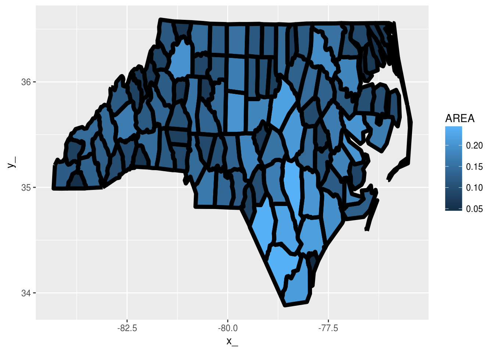
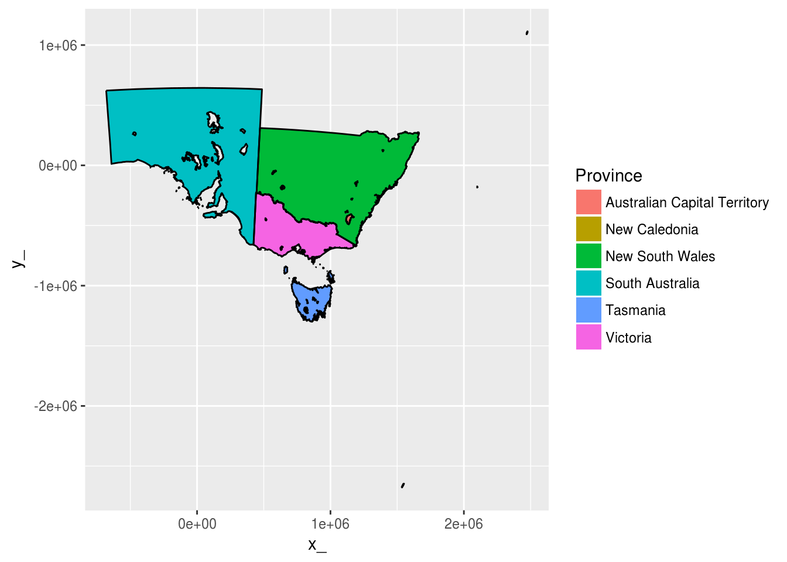
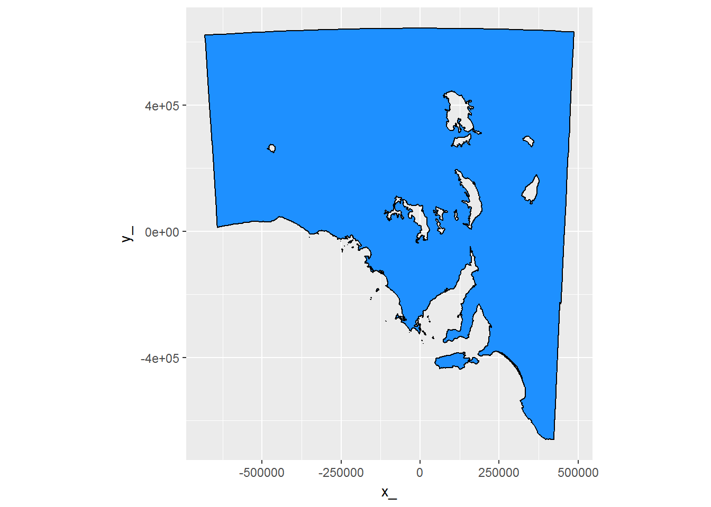

Convert simple features to a generic common form that is more general and can be used for a wide variety of data structures.
This is work in progress and at a very early stage. More to come.
Example - sf to ggplot2 round trip
library(sf)
## a MULTIPOLYGON layer
nc = st_read(system.file("shape/nc.shp", package="sf"))
#> Reading layer `nc' from data source `C:\Users\mdsumner\Documents\R\win-library\3.3\sf\shape\nc.shp' using driver `ESRI Shapefile'
#> converted into: MULTIPOLYGON
#> Simple feature collection with 100 features and 14 fields
#> geometry type: MULTIPOLYGON
#> dimension: XY
#> bbox: xmin: -84.32385 ymin: 33.88199 xmax: -75.45698 ymax: 36.58965
#> epsg (SRID): 4267
#> proj4string: +proj=longlat +datum=NAD27 +no_defsThe common form is the entity tables, objects, paths, vertices and a link table to allow de-duplication of shared vertices. Currently this de-duplication is done on all coordinate fields, but for most applications it will usually be done only in X-Y.
library(scsf)
nc = st_read(system.file("gpkg/nc.gpkg", package="sf"))
#> Reading layer `nc.gpkg' from data source `C:\Users\mdsumner\Documents\R\win-library\3.3\sf\gpkg\nc.gpkg' using driver `GPKG'
#> Simple feature collection with 100 features and 14 fields
#> geometry type: MULTIPOLYGON
#> dimension: XY
#> bbox: xmin: -84.32385 ymin: 33.88199 xmax: -75.45698 ymax: 36.58965
#> epsg (SRID): 4267
#> proj4string: +proj=longlat +datum=NAD27 +no_defs
(bmodel <- PATH(nc))
#> $object
#> # A tibble: 100 × 15
#> AREA PERIMETER CNTY_ CNTY_ID NAME FIPS FIPSNO CRESS_ID BIR74
#> <dbl> <dbl> <dbl> <dbl> <fctr> <fctr> <dbl> <int> <dbl>
#> 1 0.114 1.442 1825 1825 Ashe 37009 37009 5 1091
#> 2 0.061 1.231 1827 1827 Alleghany 37005 37005 3 487
#> 3 0.143 1.630 1828 1828 Surry 37171 37171 86 3188
#> 4 0.070 2.968 1831 1831 Currituck 37053 37053 27 508
#> 5 0.153 2.206 1832 1832 Northampton 37131 37131 66 1421
#> 6 0.097 1.670 1833 1833 Hertford 37091 37091 46 1452
#> 7 0.062 1.547 1834 1834 Camden 37029 37029 15 286
#> 8 0.091 1.284 1835 1835 Gates 37073 37073 37 420
#> 9 0.118 1.421 1836 1836 Warren 37185 37185 93 968
#> 10 0.124 1.428 1837 1837 Stokes 37169 37169 85 1612
#> # ... with 90 more rows, and 6 more variables: SID74 <dbl>, NWBIR74 <dbl>,
#> # BIR79 <dbl>, SID79 <dbl>, NWBIR79 <dbl>, object_ <chr>
#>
#> $path
#> # A tibble: 108 × 4
#> island_ ncoords_ path_ object_
#> <chr> <int> <chr> <chr>
#> 1 1 27 fcc7f4c1 a95feed2
#> 2 1 26 1ec5c0c7 8e8863e0
#> 3 1 28 9a690018 0f0ebf4b
#> 4 1 26 9159a59d 40479144
#> 5 2 7 390a3d81 40479144
#> 6 3 5 ea2cbf02 40479144
#> 7 1 34 10685829 ef858423
#> 8 1 22 3a52a4c2 5c87acd9
#> 9 1 24 661239db b59df49a
#> 10 1 17 98e4f31b fed7a06f
#> # ... with 98 more rows
#>
#> $vertex
#> # A tibble: 1,255 × 3
#> x_ y_ vertex_
#> <dbl> <dbl> <chr>
#> 1 -81.47276 36.23436 3df8420a
#> 2 -81.54084 36.27251 d5f317af
#> 3 -81.56198 36.27359 e41997db
#> 4 -81.63306 36.34069 d74f5b7e
#> 5 -81.74107 36.39178 bf072771
#> 6 -81.69828 36.47178 0d1a7a54
#> 7 -81.70280 36.51934 f9d59dc9
#> 8 -81.67000 36.58965 7e618cb1
#> 9 -81.34530 36.57286 50740cd3
#> 10 -81.34754 36.53791 4835682f
#> # ... with 1,245 more rows
#>
#> $path_link_vertex
#> # A tibble: 2,529 × 2
#> path_ vertex_
#> <chr> <chr>
#> 1 fcc7f4c1 3df8420a
#> 2 fcc7f4c1 d5f317af
#> 3 fcc7f4c1 e41997db
#> 4 fcc7f4c1 d74f5b7e
#> 5 fcc7f4c1 bf072771
#> 6 fcc7f4c1 0d1a7a54
#> 7 fcc7f4c1 f9d59dc9
#> 8 fcc7f4c1 7e618cb1
#> 9 fcc7f4c1 50740cd3
#> 10 fcc7f4c1 4835682f
#> # ... with 2,519 more rows
#>
#> attr(,"class")
#> [1] "PATH" "sc"
#> attr(,"join_ramp")
#> [1] "object" "path" "path_link_vertex"
#> [4] "vertex"Prove that things work by round-tripping to the PATH model and onto the old fortify approach for ggplot2.
inner_cascade <- function(x) {
tabnames <- sc:::join_ramp(x)
tab <- x[[tabnames[1]]]
for (ni in tabnames[-1L]) tab <- dplyr::inner_join(tab, x[[ni]])
tab
}
## this just joins everything back together in one big fortify table
library(dplyr)
tab <- bmodel %>% inner_cascade()
#> Joining, by = "object_"
#> Joining, by = "path_"
#> Joining, by = "vertex_"
library(ggplot2)
ggplot(tab) + aes(x = x_, y = y_, group = path_) +
geom_polygon(aes(fill = AREA)) + geom_path(lwd = 2, col = "black") 
What about polygons with holes and lots of tiny complicated parts.
data("inlandwaters")
iw <- PATH(inlandwaters)
str(iw)
#> List of 4
#> $ object :Classes 'tbl_df', 'tbl' and 'data.frame': 6 obs. of 3 variables:
#> ..$ ID : int [1:6] 103841 103842 103843 103846 103847 103848
#> ..$ Province: chr [1:6] "Australian Capital Territory" "New Caledonia" "New South Wales" "South Australia" ...
#> ..$ object_ : chr [1:6] "cb418b25" "0e2bfbd8" "c5f04c91" "d877f7f8" ...
#> ..- attr(*, "sf_column")= chr "geom"
#> ..- attr(*, "agr")= Factor w/ 3 levels "constant","aggregate",..: NA NA
#> .. ..- attr(*, "names")= chr [1:2] "ID" "Province"
#> $ path :Classes 'tbl_df', 'tbl' and 'data.frame': 189 obs. of 4 variables:
#> ..$ island_ : chr [1:189] "1" "1" "1" "1" ...
#> ..$ ncoords_: int [1:189] 280 27 7310 68 280 88 162 119 51 71 ...
#> ..$ path_ : chr [1:189] "17d13988" "5ce23647" "00092f09" "358ee883" ...
#> ..$ object_ : chr [1:189] "cb418b25" "0e2bfbd8" "c5f04c91" "c5f04c91" ...
#> $ vertex :Classes 'tbl_df', 'tbl' and 'data.frame': 30835 obs. of 3 variables:
#> ..$ x_ : num [1:30835] 1116371 1117093 1117172 1117741 1117629 ...
#> ..$ y_ : num [1:30835] -458419 -457111 -456893 -456561 -455510 ...
#> ..$ vertex_: chr [1:30835] "842cf57a" "05be41b6" "50369c2f" "c87bad37" ...
#> $ path_link_vertex:Classes 'tbl_df', 'tbl' and 'data.frame': 33644 obs. of 2 variables:
#> ..$ path_ : chr [1:33644] "17d13988" "17d13988" "17d13988" "17d13988" ...
#> ..$ vertex_: chr [1:33644] "842cf57a" "05be41b6" "50369c2f" "c87bad37" ...
#> - attr(*, "class")= chr [1:2] "PATH" "sc"
#> - attr(*, "join_ramp")= chr [1:4] "object" "path" "path_link_vertex" "vertex"
tab <- iw %>% inner_cascade()
#> Joining, by = "object_"
#> Joining, by = "path_"
#> Joining, by = "vertex_"
library(ggplot2)
ggplot(tab) + aes(x = x_, y = y_, group = path_) +
ggpolypath::geom_polypath(aes(fill = Province)) + geom_path(col = "black") 
ggplot(tab %>% filter(Province == "South Australia")) + aes(x = x_, y = y_, group = path_) +
ggpolypath::geom_polypath(fill = "dodgerblue") + geom_path(col = "black") + coord_fixed()